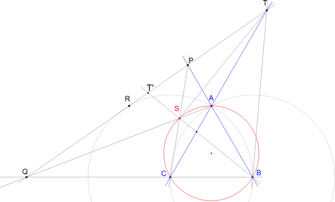

Para el aula. Propuesto por Juan Carlos Salazar, profesor de Geometría del Equipo Olímpico de Venezuela.(Puerto Ordaz)
Problema 306 Sea el triángulo equilátero ABC, por el punto R simétrico de B con respecto a AC se traza una recta que corta a las prolongaciones de BA y BC en P y Q respectivamente. Además si S es el punto de corte de AQ y PC, y T es el punto de corte de AC y PQ. Demostrar que: SB = SA + SC y <BST = 90º. Salazar, J. C. (2006): Comunicación personal.
Solución de José María Pedret, Ingeniero Naval. Esplugues de Llobregat (Barcelona). (02 de abril de 2006) |
|
 Como la recta PQ rota en torno a R, induce una homografía h:AB→BC tal que h(P)=Q=PR∩BC ∀ P∈AB. En estas condiciones la biyección entre haces de rectas h*:C*→A* tal que h*(CP)=AQ es una homografía y por el Teorema de Chasles-Steiner, el lugar geométrico de S=CP∩AQ=CP∩h*(CP) es una cónica que pasa por C y A. Si P=B nos dice que la cónica pasa por B. Por el mismo teorema h*(CA)=AA que es la tangente en A; pero esa tangente es paralela a BC y h*-1(AC)=CC que es la tangente en C y paralela a AB. Por lo tanto: Si la cónica pasa por A, B, C, la tangente en A es paralela a BC y la tangente en C es paralela a AB, esa cónica es el CÍRCULO CIRCUNSCRITO a ABC.
SAxBC+SCxAB=SBxCA
SA+SC=SB
∠BST=½π. |